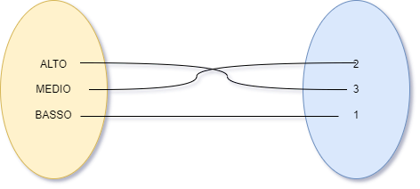
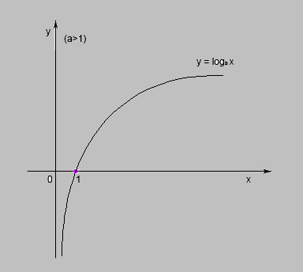

Home
L’ALGORITMO DI
CONTENIMENTO (O MITIGAZIONE) DEL RISCHIO
L’algoritmo di contenimento (o mitigazione, o riduzione…) del rischio
corruttivo permette di ottenere un valore del PxI di uno specifico
rischio ridotto in funzione dell’applicazione di una o più misure di
mitigazione.
Per determinare questo algoritmo, si procede nel seguente modo:
si quantificano, tramite una funzione di codifica, i valori del
PxI del rischio facendo corrispondere ad ogni valore un numero intero,
variabile da 0 per il rischio MINIMO a 4 per il rischio MOLTO
ALTO;
- per ogni misura di carattere generale si sottrae 0.5 dal valore
del PxI del rischio;
- per ogni misura di carattere specifico si sottrae 1.0 dal valore del
PxI del rischio
nei calcoli vengono effettuati solo arrotondamenti per eccesso;
quindi per considerare un PxI ridotto di un livello bisogna che le
misure abbiano determinato almeno una riduzione di 1 (da 1.0 a
1.9).

I valori assegnati ai livelli dei PxI possono essere ricavati dalla
seguente tabella:
| MINIMO |
0 |
| BASSO |
1 |
| MEDIO |
2 |
| ALTO |
3 |
| MASSIMO |
4 |
NOTA BENE
Da un punto di vista statistico, l’operazione di trasformare valori
chiaramente su scala ordinale in valori su scala a intervalli uguali
(anzi, su scala di rapporti, perché è stato determinato uno zero in modo
univoco) è sicuramente un abuso di notazione, perché fornisce
un’impressione di precisione che nei dati non esiste; ad esempio,
sicuramente un PxI MOLTO ALTO (o Massimo) sarà maggiore di un PxI medio,
ma non si può dire che MOLTO ALTO sia esattamente il doppio di MEDIO,
cosa che invece la trasformazione numerica dà l’impressione di poter
concludere (perché 4 è il doppio di 2). Analogamente, neppure si può
dire che un PxI ALTO valga esattamente come 3 PxI BASSI.
Pertanto, a prescindere da qualunque conversione arbitraria, bisogna
considerare che i dati relativi ai PxI (livelli di rischio) sono e
resteranno sempre misurati su scala ordinale, non su scala a intervalli
o di rapporti.
D’altro canto, la conversione numerica permette di determinare i
livelli di mitigazione in maniera molto più pratica rispetto a una
“mitigazione ordinale”. L’importante è ricordarsi che l’apparente
precisione non corrisponde ad una precisione effettiva nei dati.
Per fare un esempio, riprendiamo la tabella precedente:
|
RISCHI
(a)
|
PxI
Processo
(b)
|
PxI
Rischi
(c)
|
PxI Rischi (d) (dopo l’applicazione delle misure)
STIMA
|
PxI Rischi (e) (dopo aver effettuato il
monitoraggio delle misure)
|
PxI Processo (f) (dopo applicazione misure
E monitoraggio)
|
 Assenza di adeguata pubblicità della selezione
Assenza di adeguata pubblicità della selezione
|
MEDIO
Il processo è mediamente esposto a rischio corruttivo in quanto trattasi
di un processo che coinvolge molteplici soggetti, sia interni che
esterni all’Ateneo. La presenza di segnalazioni da parte degli utenti
aumenta l’esposizione al rischio.
|
MEDIO
|
BASSO {1S}
|
MEDIO (0)
|
MEDIO
|
|
Assenza di controlli sulle autodichiarazioni rese dai richiedenti
|
MEDIO
|
MEDIO {1G}
|
BASSO (1S)
|
|
Agevolazioni indebite favorite dalla modifica frequente del piano di
studi
|
MEDIO
|
BASSO
{1G + 1S}
|
BASSO (1S)
|
|
Inosservanza delle regole in materia di trasparenza
|
MEDIO
|
MINIMO {4G}
|
BASSO (3G)
|
|
Mancato recupero dei crediti
|
MEDIO
|
MEDIO {1G}
|
MEDIO (0)
|
|
Riconoscimento indebito del contributo a soggetti non in possesso dei
requisiti previsti dal bando
|
MEDIO
|
BASSO {1S}
|
MEDIA (1G)
|
Come leggiamo questa tabella?
Colonna b : Anzitutto, le interviste hanno permesso
di determinare un rischio MEDIO per questo processo
Colonna c : Prima dell’applicazione delle misure,
quindi, il valore di rischio di ogni rischio del processo è stato
assegnato a MEDIO
Colonna d : Sulla base delle informazioni a sua
disposizione, e dei dati raccolti contestualmente alle interviste,
l’esperto di valutazione del rischio corruttivo ha stimato che:
al RISCHIO 1 dovessero essere applicate: 1 misura specifica ({1
S} vale -1)
al RISCHIO 2 dovessero essere applicate: 1 misura generica ({1 G}
vale -0.5)
al RISCHIO 3 dovessero essere applicate: 2 misure: 1 specifica e
1 generica ({1G + 1S} valgono -1.5)
al RISCHIO 4 dovessero essere applicate 4 misure generiche ({4G}
valgono 4x-0.5 = -2)
al RISCHIO 5 dovessero essere applicate 1 misura generica ({1G}
vale -0.5)
al RISCHIO 6 dovessero essere applicate 1 misura specifica ( {1S}
vale -1)
Conseguentemente, i livelli di PxI dei rischi si sarebbero dovuti
ridurre come segue:
RISCHIO 1: 2 (cioè MEDIO) – 1.0 = 1 = BASSO
RISCHIO 2: 2 – 0.5 = 1.5 → pari a 2 = MEDIO
RISCHIO 3: 2 – 1.5 = 0.5 → pari a 1 = BASSO
RISCHIO 4: 2 – 2 = 0 → pari a 0 = MINIMO
RISCHIO 5: 2 – 0.5 = 1.5 → pari a 2 = MEDIO
RISCHIO 6: 2 – 1 = 1 → pari a 1 = BASSO
Colonna e : A seguito dell’effettuazione del
monitoraggio, l’esperto ha trovato la seguente situazione:
RISCHIO 1: nessuna misura applicata → 2 – 0 = 2 = MEDIO
RISCHIO 2: una misura specifica applicata → 2 – 1 = 1 =
BASSO
RISCHIO 3: una misura specifica applicata → 2 – 1 = 1 =
BASSO
RISCHIO 4: 3 misure generiche applicate → 2 – 1.5 = 0.5 → pari a
1 = BASSO
RISCHIO 5: nessuna misura applicata → 2 – 0 = 2 = MEDIO
RISCHIO 6: una misura generica applicata → 2 – 0.5 = 1.5 → pari a
2 = MEDIO
Si può concludere che, nella maggior parte dei casi, la situazione
monitorata è risultata peggiore di quella prevista. Solo rispetto al
RISCHIO 2, siccome la struttura è riuscita ad introdurre una misura
specifica piuttosto che quella generica raccomandata, la situazione è
risultata migliore dopo il monitoraggio (anche se sarà da valutare se
l’arbitrio della struttura nel cambiare la misura è stato giustificato).
Nel caso del rischio 3, la situazione è risultata essere uguale a quella
prevista negli effetti però peggiore nella modalità perché
l’applicazione di una misura specifica, avendo tolto 1, è stata
sufficiente per ridurre il PxI da MEDIO a BASSO, come era stato
richiesto e stimato prima del monitoraggio; ciò nonostante, era previsto
che venissero applicate 2 misure: una generica + una specifica, per cui
la struttura, pur avendo ottenuto una riduzione effettiva del PxI sul
rischio, è risultata comunque parzialmente inadempiente rispetto alle
aspettative.
Insomma, esiste anche una valutazione qualitativa da considerare,
oltre a quella della dimensione puramente quantitativa dovuta alle
misure applicate.
NOTA BENE
Una delle ipotesi che erano state considerate, nel valutare come
dovesse essere calcolato l’apporto di mitigazione delle misure, era di
applicare un algoritmo che seguisse una scala logaritmica

dove funzione logaritmica f(x) = loga(x) è una
funzione definita in ℝ e con a>0, a≠1 (qui
a>1).
Ciò avrebbe significato che l’apporto mitigante di ogni misura
sarebbe stato via via minore quanto più venivano aggiunte misure. Per
esempio, la prima misura specifica vale -1, la seconda vale -0.95, la
terza vale -0.92 e così via; analogamente la prima misura generica vale
-0.5, la seconda vale -0.48, la terza -0.45 etc. In questo modo, dopo
una certa soglia, aggiungere ulteriori misure non avrebbe avuto senso
perché quelle aggiunte non avrebbero sortito un effetto significativo.
Il criterio generale sarebbe stato valido anche per serie alternate di
misure generiche e specifiche.
Tuttavia, la decisione di smussare l’effetto delle misure man mano
che vengono applicate dopo altre misure è risultata troppo arbitraria,
oltre che macchinosa; inoltre, non è detto che misure applicate dopo
altre misure debbano avere un effetto ridotto, perché potrebbe anche
essere vero il contrario: magari applicare una misura dopo che un’altra
ha già “lavorato” su alcuni aspetti è più efficace, non meno.
Per questi motivi, l’effetto mitigante delle misure è stato alla fine
considerato come lineare, non logaritmico.
Colonna f : Nonostante le riduzioni dei PxI dei
rischi ottenute, i valori ottenuti non sono sufficienti, dopo il
monitoraggio, per sancire che ci sia stata una riduzione del PxI
complessivo del processo, da MEDIO a BASSO.
Quest’ultima conclusione dipende dall’applicazione di uno specifico
algoritmo di ricalcolo.